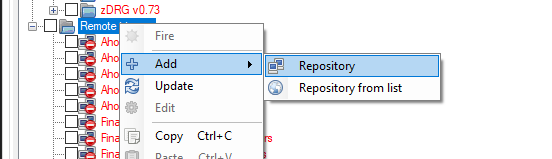
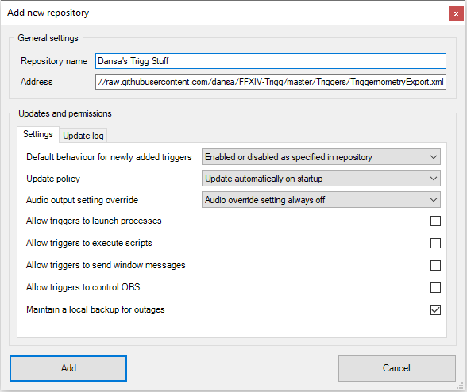
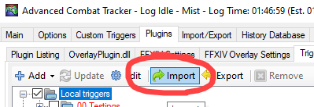
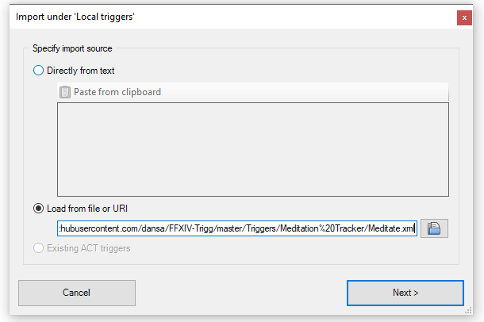

The Meditation Tracker is quite self explanatory in the sense that it keeps track of your Meditation stacks in a better way than showing them in the buff bar.
Currently the features implemented are
- A visual gauge, either in the style of Aetherflow or in the style of a "simplified" gauge (see above).
- An Audio que for reaching 3 stacks, the same audio que as is used once any job gauge is maxed out (such as kenki).
- A Text-to-Speech callout when you gain stacks.
- A Combo ring meant to be placed on the Shoha button on your hotbar that will display once you've reached 3 stacks.
These features can be disabled/modified individually so you can more or less get the setup you'd like.
Installing triggers in Triggernometry is pretty straightforward. I am at this point assuming you have Triggernometry installed.
Method 1 - Repo Installation
The easiest way, that also makes sure you get any potential updates automatically, is to just add the whole repository as a remote trigger.
Left click Remote Repositories in Triggernometry and add repository.

Write whatever you want in the name field and plug this url into the Address
https://raw.githubusercontent.com/dansa/FFXIV-Trigg/master/Triggers/TriggernometryExport.xml 
The rest of the settings should be left as is, then you just press add and you should be good to go, barring any optional setup.
This will install all the other triggers I have made, so make sure you disable them if you don't want to use them.
Method 2 - Local Installation
Grab the XML file of the trigger you want, for the Meditation Tracker the URL would be
https://raw.githubusercontent.com/dansa/FFXIV-Trigg/master/Triggers/Meditation%20Tracker/Meditate.xml Then import the XML into Triggernometry by pressing, yes, the Import button.

This will bring up a window where you can either paste the ENTIRE content of the XML file in the text field, or simply slap in the URL linked above.

Then you just press Next, and Import on the following screen and the Trigger should be imported into your Local Triggers.
If you have any questions, feedback or problems, drop me a message on discord.